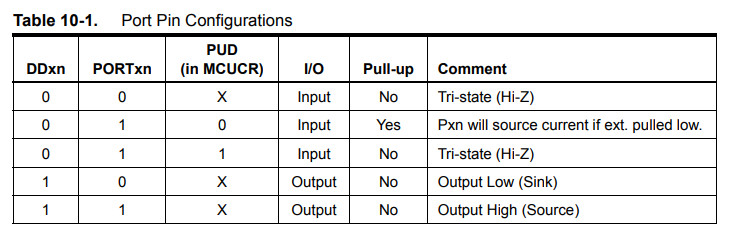

參考資訊：
https://www.microchip.com/en-us/product/attiny13#Documentation
https://nerdathome.blogspot.com/2008/04/avr-as-usage-tutorial.html
DDRB(I/O方向)、PORTB(I/O輸出)

.equ PINB, 0x16
.equ DDRB, 0x17
.equ PORTB, 0x18
.equ LED, 1
.equ BTN, 0
.org 0x0000
rjmp main
.org 0x0010
main:
sbi DDRB, LED
cbi DDRB, BTN
sbi PORTB, LED
sbi PORTB, BTN
loop:
in r0, PINB
sbrs r0, BTN
cbi PORTB, LED
sbrc r0, BTN
sbi PORTB, LED
rjmp loop
編譯和燒錄
$ avr-as -mmcu=attiny13 -o main.o main.s $ avr-ld -o main.elf main.o $ avr-objcopy --output-target=ihex main.elf main.ihex $ sudo avrdude -c usbasp -p t13 -B 1024 -U flash:w:main.ihex:i
完成